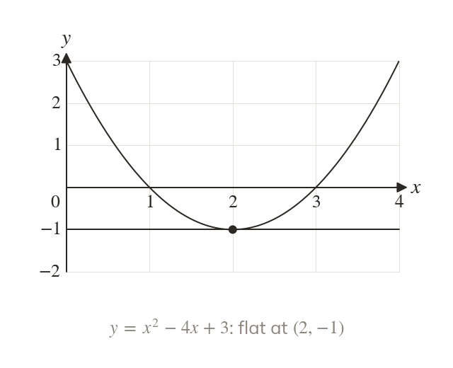
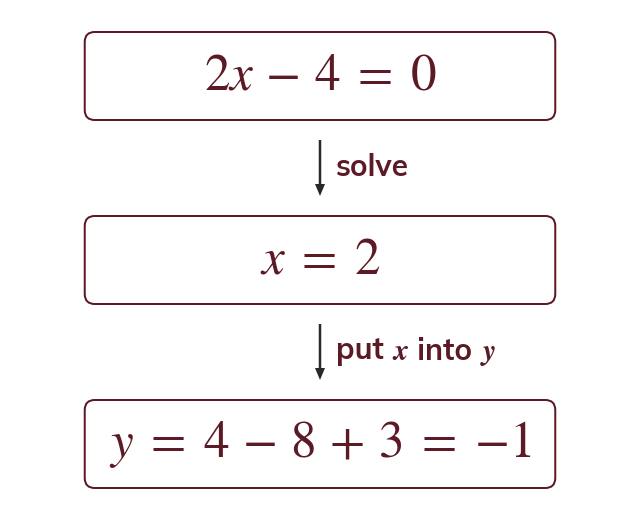
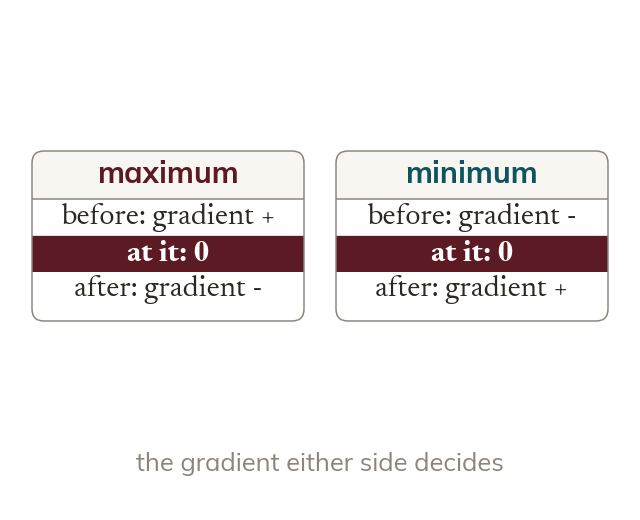
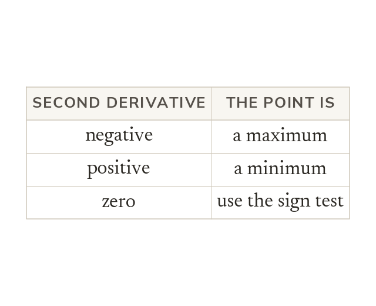

Flat for an instant
At a stationary point the gradient is zero. So stationary points come from solving dy/dx
Where a curve turns, its gradient is zero for an instant. Finding and classifying those points is the key to sketching curves and to every optimisation problem.
Work down the page at your own pace. Write every answer in your book first, then click to check it.
Read each card, then follow the worked examples one step at a time.

At a stationary point the gradient is zero. So stationary points come from solving dy/dx

Solving dy/dx gives only the x-coordinate. The y-coordinate comes from the curve's own equation.
Pick an answer. If it's wrong, the feedback tells you which mistake it was.
Section Stationary points : the questions that find dy/dx and solve dy/dx for the coordinates of each stationary point.
Read each card, then follow the worked examples one step at a time.

A maximum has a positive gradient before it and a negative one after. A minimum has the reverse.

At a stationary point, a negative means a maximum. A positive means a minimum. Zero needs the sign test instead.
Pick an answer. If it's wrong, the feedback tells you which mistake it was.
Section Stationary points : the questions that classify each stationary point with the second derivative, and with the gradient either side where that test fails.
Finished? Next lesson: 8.7b Curve Sketching and Optimisation.
Log in, then search for a code to practise that skill.